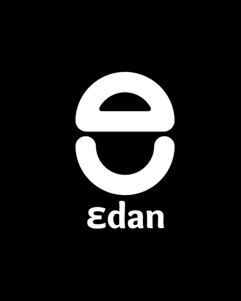
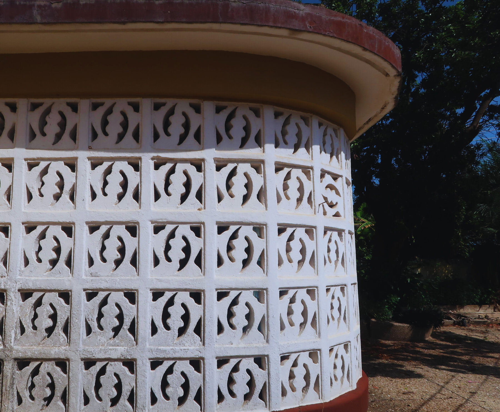
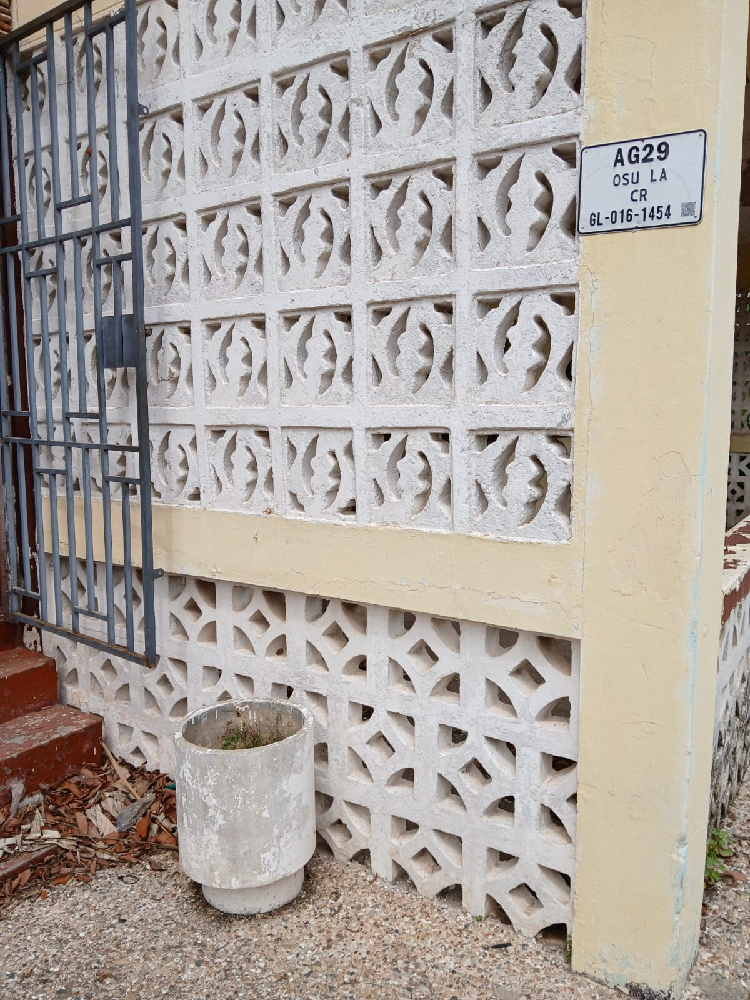
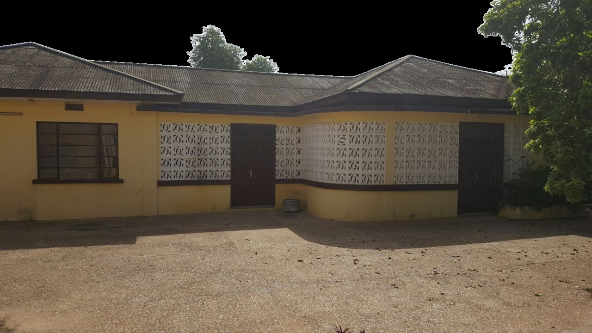

Ɛdan
A home for research, craft and hospitality — built to imagine fairer, more connected cities.
Urban populations have tripled since 2000, outpacing planning and deepening inequality. Ɛdan is where creativity meets the city — a living lab for artists, researchers, urbanists and communities imagining fairer urban futures.


Sustained by a guesthouse, café, co-working and consultancy.
Where ideas for just, circular and inclusive cities take shape.
Practitioners prototyping new urban futures.
Our urban creative lab is led and run by women, placing their perspectives at the forefront — while welcoming anyone who wants to join, collaborate and co-create new ways of understanding and shaping cities.